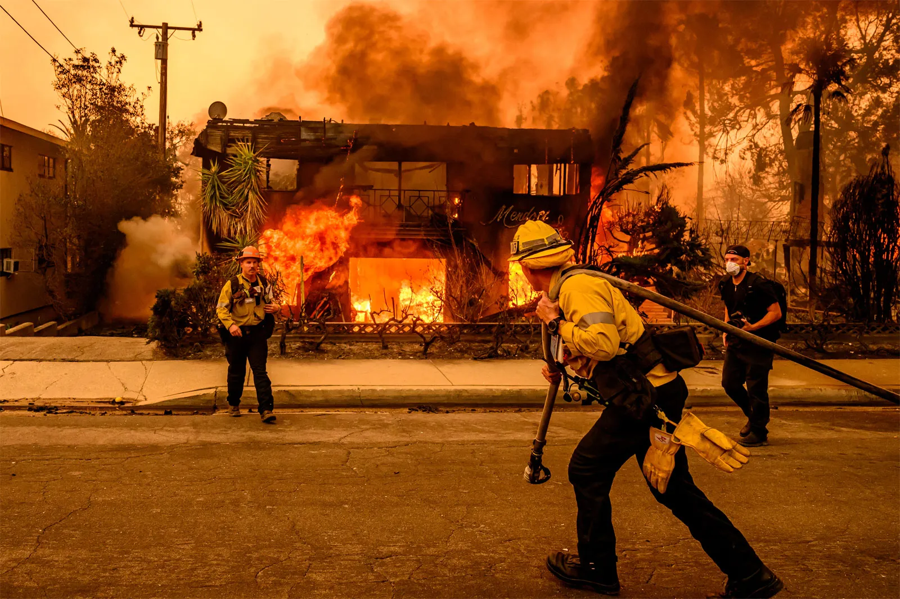

Case Study
Palisades Wildfires Crisis Communications
In January 2025, fast-moving wildfires and hazardous smoke created an evolving public health emergency across Los Angeles County. Communities faced evacuations, poor air quality, disrupted routines, and heightened concerns about access to care. Healthcare operations across the region shifted quickly as care teams worked to remain available for members experiencing respiratory symptoms, cardiovascular concerns, injuries, medication needs, and stress-related health impacts.
As Public Information Officer for Kaiser Permanente's incident response team serving the Baldwin Park area, I led the local communications response. My role was to help ensure employees, physicians, members, media, and community partners received timely, accurate, and actionable information as conditions changed.
In a healthcare emergency, communications has to do more than share updates. It has to answer the practical questions people are asking in real time: where to receive care, whether it is safe to travel to an appointment, what to do if smoke is affecting health, how to connect with a clinician virtually, and what support is available for displaced families.
The response required careful coordination. Local information needed to reflect conditions in the Baldwin Park service area while remaining consistent with regional and national communications. As the communications lead within the local Incident Response Team, I served as the link between incident command, operations, clinical leaders, external agency Public Information Officers, and the audiences depending on clear information.
My responsibilities included advising the Incident Commander on communications risks, audience concerns, timing of updates, and information needs. I gathered and verified operational updates from incident leads before information was shared, coordinated approved messages for employees, physicians, members, patients, media, and community partners, monitored coverage and stakeholder concerns, and documented communications activity to support shift handoffs, continuity, and after-action review.
I focused the local response on four priorities. First, create a dependable source of truth by collecting updates, confirming facts with operational and clinical leads, and issuing communications only after appropriate review. Second, lead with practical next steps so members had clear guidance on care options, virtual visits, smoke exposure, medication needs, and when to seek urgent or emergency care.
Third, support continuity of care through virtual options. Virtual care became especially important when travel was difficult, air quality was poor, or in-person care was less accessible. Later research showing increased virtual visits for respiratory and cardiovascular symptoms after the fires reinforced a key crisis communications lesson: virtual care messaging must be prominent, clear, and easy to act on during climate-related emergencies.
Fourth, connect the healthcare response to community recovery. The response extended beyond clinical care. Kaiser Permanente employees supported disaster survivors with medical, mental health, pharmacy, and recovery services, while the organization contributed space and resources that helped public agencies and nonprofit partners assist displaced families. Communications needed to tell that fuller story while still prioritizing clear, useful information for people seeking care.
This incident demonstrated the value of embedding communications directly within the Incident Command System. By maintaining validated situational awareness at the service-area level and sharing it upward to regional and national command, we supported faster, more consistent decision-making and communications.
The experience reinforced several principles that guide my crisis leadership. People need simple, actionable information during an emergency. The PIO must be close to operational decisions. Local communications must reflect local conditions while staying aligned with the broader enterprise response. Monitoring public concerns is essential to identify misinformation and unanswered questions. And healthcare organizations build trust by pairing operational readiness with empathy, precision, and a clear focus on the people they serve.
Serving as a Public Information Officer during the wildfires strengthened my ability to lead communications in complex, high-stakes environments where rapid coordination, credible information, and human-centered messaging are essential.
This personal portfolio case study is presented for professional context only and is not an official Kaiser Permanente webpage.